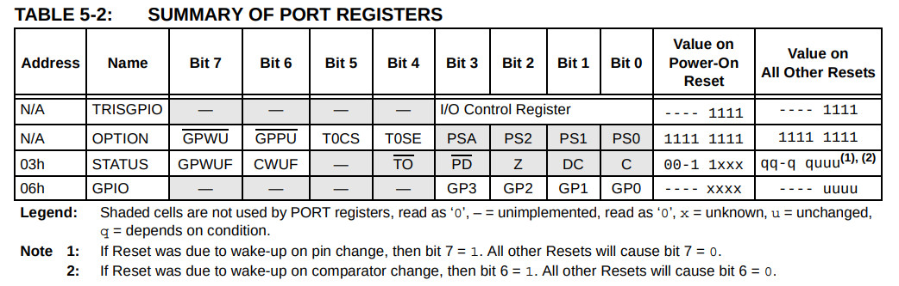

TRISGPIO和OPTION必須透過指令修改

list p=10f200, r=hex
#include <p10f200.inc>
__config _CONFIG, _IntRC_OSC & _WDTE_OFF & _MCLRE_OFF
#define tmp1 0x10
#define tmp2 0x11
org 0x00
start:
movlw b'11000000'
option
movlw b'00001100'
tris GPIO
loop:
bsf GPIO, 0
bcf GPIO, 1
call delay
bsf GPIO, 0
bsf GPIO, 1
call delay
goto loop
delay:
movlw 0xff
movwf tmp2
movlw 0xff
movwf tmp1
decfsz tmp1, f
goto $-1
decfsz tmp2, f
goto $-3
return
end
編譯
$ gpasm main.s
完成